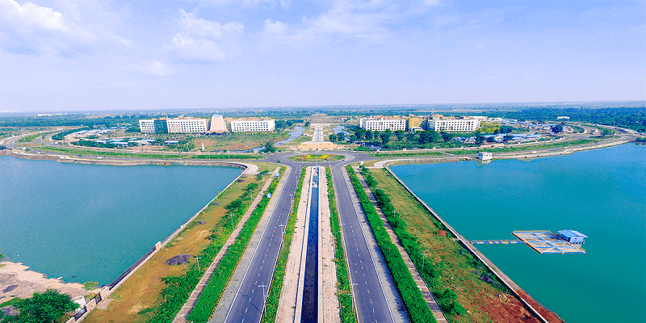
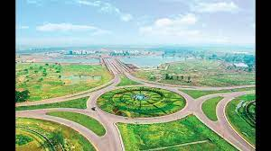
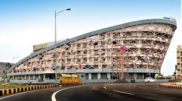

Images Of Naya Raipur

.jpg)
.jpg)
.jpg)
.jpg)
.jpg)

.jpg)

Country India
State Chhattisgarh
District Raipur
Government
• Body Nava Raipur Atal Nagar Vikas Pradhikaran
Population
• Total 560,000
Languages
• Official Hindi
Time zone UTC+5:30 (IST)
Telephone code +91-0771
Vehicle registration CG 04
Nearest city Raipur, Bhilai, Durg
Lok Sabha constituency Raipur (Lok Sabha constituency)
Civic agency Nava Raipur Atal Nagar Vikas Pradhikaran
Website https://navaraipuratalnagar.com
Shree Bhupesh Baghel Hon'ble Chief Minister of Chhattisgarh
Shree Mohammad Akbar Hon'ble Minister of Transport, Forest, Housing and Environment Departments.
Planning A comprehensive exercise was undertaken to find a perfect location for the city. An imaginary circle of 50 km radius was drawn around Raipur and this massive area was divided into four quadrants. Each quadrant was analysed in context of regional development, existing development, climatic factors, flora and fauna, water resources, transport network etc. and the efforts yielded the present site southeast of Raipur at about 15 km distance, close to Mana Airport. The site selection methodology and site profile are detailed.[4]
Nava Raipur Development Authority After the formation of the new state of Chhattisgarh in November 2000, the state government decided to create a well planned new city for Raipur. Hence a special area has been notified under section 64 of Nagar Tatha Gramnivesh Adhiniyam 1973. The authority thus formed is the Capital Area Development Authority (CADA) which is now called the Atal Nagar Vikas Pradhikaran (NRDA). NRDA is the nodal agency undertaking comprehensive development of this 'greenfield' city. Chief executive officers are appointed by government and other officers and staff working under NRDA organisation.[5] Indian Administrative Service (IAS) officer P. Joy Oommen is the chairman of the NRDA, while Amit Kataria is its chief executive.
Vision for development Naya Raipur would be a ‘green city’ in every sense of the term. Large areas would be brought under tree plantation, arrangements would be made for water conservation and waste water recycling, and non-conventional energy resources would be used to the maximum.[7] It would reflect the rich heritage and culture of Chhattisgarh and India in its urban design and architecture. Special efforts would be taken to make it a people friendly and visitor friendly city.[8] The city's design would a promote sense of security and comfort among its citizens, especially women, children and the physically challenged.